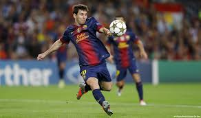
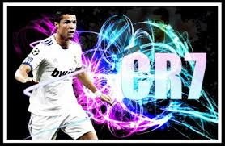
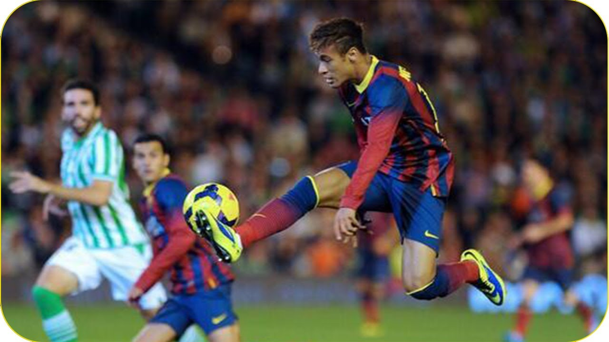
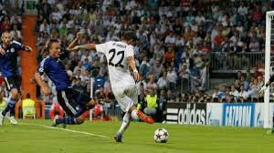

Lionel Andrés Messi Cuccittini (Rosario, Argentina, 24 de junio de 1987), conocido también como Leo Messi,10 es un futbolista argentino que también posee la nacionalidad española desde el año 2005. Juega como delantero en el F. C. Barcelona, de la Primera División de España, y en la selección de fútbol de Argentina, de la cual es también capitán. Desde 2009 es considerado por diversos organismos deportivos,11 por varios futbolistas,12 por gran cantidad de exjugadores legendarios,13entrenadores,14 , deportistas de élite15 y la prensa en general16 como «el actual mejor jugador del mundo» y para algunos deportistas, jugadores y técnicos el mejor de la historia.17 En 2013 el presidente de la FIFA, Joseph Blatter, también lo destacó como el mejor del mundo.
Si bien ya era un prodigio muy elogiado cuando llegó desde el Sporting de Lisboa en 2003, Ronaldo se ha convertido en el Manchester United en uno de los jugadores más reconocidos del planeta. Fue el mejor futbolista del año 2008 para la FIFA y ha marcado un increíble record de 42 goles en todas las competencias que disputó en la temporada 2007-08, por lo cual se espera que Ronaldo sea una de las grandes figuras de Sudáfrica 2010. Tras ganar todo lo que estaba disponible con Manchester United, Ronaldo hizo realidad el sueño de jugar en el Real Madrid, que lo compró este año por una cifra récord de casi 100 millones de dólares. Su debut con Portugal fue en un partido ante Kazajstán, en 2003, y luego fue parte del plantel que disputó la Eurocopa 2004, jugada en Portugal. Y fue uno de los mejores del torneo.
Neymar da Silva Santos Júnior (Mogi das Cruzes, São Paulo, 5 de febrero de 1992), mejor conocido como Neymar o Neymar Jr., es un futbolista brasileño. Juega como delantero y su actual equipo es el F. C. Barcelona, de la Primera División de España. Fue nominado para el FIFA Balón de Oro en 2011 y 2012 y al Premio Puskás en 2010, 2011 y 2012, donde la máxima posición alcanzada en el primero es la 10 y en el segundo la de ganador. Es conocido por su aceleración, velocidad, habilidad en el regate, técnica y acabado. Su estilo de juego le ha valido elogios y críticas con los aficionados y los medios de comunicación. En una polémica declaración días antes de la final del Mundial de Clubes de la FIFA, Pelé afirmó que Neymar es un gran jugador y que está por encima de Lionel Messi.2 Ganó el premio al Futbolista del año en Sudamérica en 2011. Batió varios récords ya que fue el jugador que más puntos obtuvo y el más joven en conseguirlo.
Ángel di maría Nació en la ciudad de Rosario y creció junto a su familia en el barrio La Cerámica en la zona norte de la ciudad. Su padre, Miguel, estuvo a punto de ser jugador profesional de fútbol en River Plate pero sufrió una lesión antes de poder debutar y se alejó de la actividad.4 Miguel trabajó en una carbonería por 16 años cuando Ángel era pequeño y este le ayudó a armar las bolsas de carbón y repartirlas hasta que debutó en primera división. Con solo 4 años Di María era un niño muy activo, y por recomendación de un médico comenzó a jugar al fútbol en un club cercano a su casa: El Torito.5 A los 7 años jugó un partido definitorio para ganar una liga local ante Rosario Central donde anotó los 2 goles de la victoria (uno de ellos olímpico).4 Gracias a ese encuentro y sus actuaciones en el club (anotó 64 goles en un año) llamó la atención de Ángel Tulio Zof quien convenció a su familia para que pasara a jugar a Central.6
